This report covers the network setup (Part A), our TCP over raw sockets (Part B), the HTTP client (Part C) and the HTTP server (Part D). Every screenshot was taken on our four Ubuntu 22.04 VMs (UTM on an Apple Silicon Mac) and shows the command that produced it.
The four parts build one small system from the bottom up: a network, a TCP stack, and a web client and server on top.
client.py sends one HTTP GET request, reads the reply, and saves the body.server.py serves files from a folder to tools like curl and wget.custom_http.py for HTTP work (building and reading requests and replies).custom_socket.py for TCP (our Part B code), so no kernel TCP and no HTTP libraries are used.Four VMs form a chain (client, r1, r2, server) plus a second direct link between the client and r2, so requests and replies take different paths.
| Machine | Role | Interfaces |
|---|---|---|
| client | host | LAN A 10.10.1.10/24 (enp0s8), Link D 10.10.4.2/30 (enp0s9) |
| r1 | router | LAN A 10.10.1.1/24 (enp0s8), LAN B 10.10.2.1/24 (enp0s9) |
| r2 | router | LAN B 10.10.2.2/24 (enp0s8), LAN C 10.10.3.1/24 (enp0s9), Link D 10.10.4.1/30 (enp0s10) |
| server | host | LAN C 10.10.3.10/24 (enp0s8) |
Each VM is attached only to its own internal networks (no NAT adapter). Before running our scripts, every interface is down and has no address.
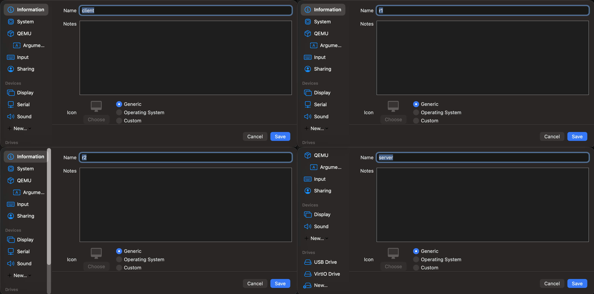
What it shows: UTM's settings window for client, r1, r2 and server. The Devices list of every VM has no Network device, so UTM gives none of them a NAT, shared or bridged network. The VMs have no Internet and no link to the host computer. The only network cards are the internal links (LANs A, B, C and Link D), which we add through the QEMU Arguments page.
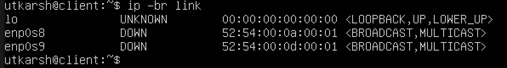
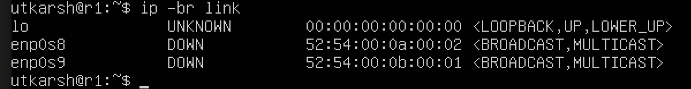
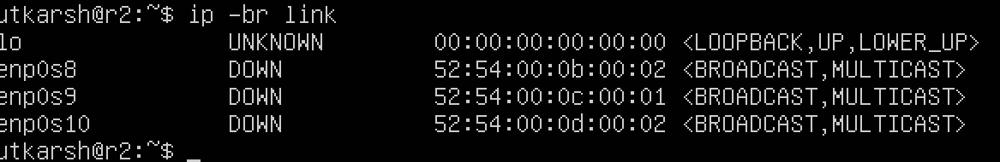
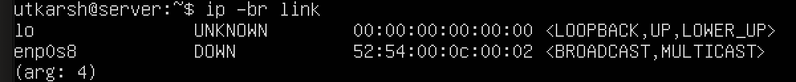
What it shows: ip -br link on each VM before setup. The client and server have the right number of interfaces (2 and 1), r1 has 2 and r2 has 3, and all are DOWN. The middle part of each MAC address shows which network the card is on: 0a = LAN A, 0b = LAN B, 0c = LAN C, 0d = Link D. For example, the client's cards end in 0a:00:01 and 0d:00:01, so it sits on LAN A and Link D.
Adding an address with ip addr add creates the route for that network automatically. Only the routes below are added by hand.
| Machine | Route added | Why |
|---|---|---|
| client | 10.10.2.0/24 via 10.10.1.1 (r1) |
Requests to LAN B go through r1 |
| client | 10.10.3.0/24 via 10.10.1.1 (r1) |
Requests to the server go client, r1, r2, server (A2) |
| r1 | default via 10.10.2.2 (r2) |
One route covers every network r1 is not attached to (LAN C and Link D) (A5) |
| r2 | 10.10.1.0/24 via 10.10.2.1 (r1) |
Lets r2 reach LAN A, including r1's own address |
| r2 | 10.10.1.10/32 via 10.10.4.2 (client) |
Sends replies for the client over Link D (A3) |
| server | default via 10.10.3.1 (r2) |
Every reply leaves through r2 |
Each screenshot shows the same steps: rp_filter is 1 everywhere before we start (A7), then our script runs, then ip -br addr and ip route.
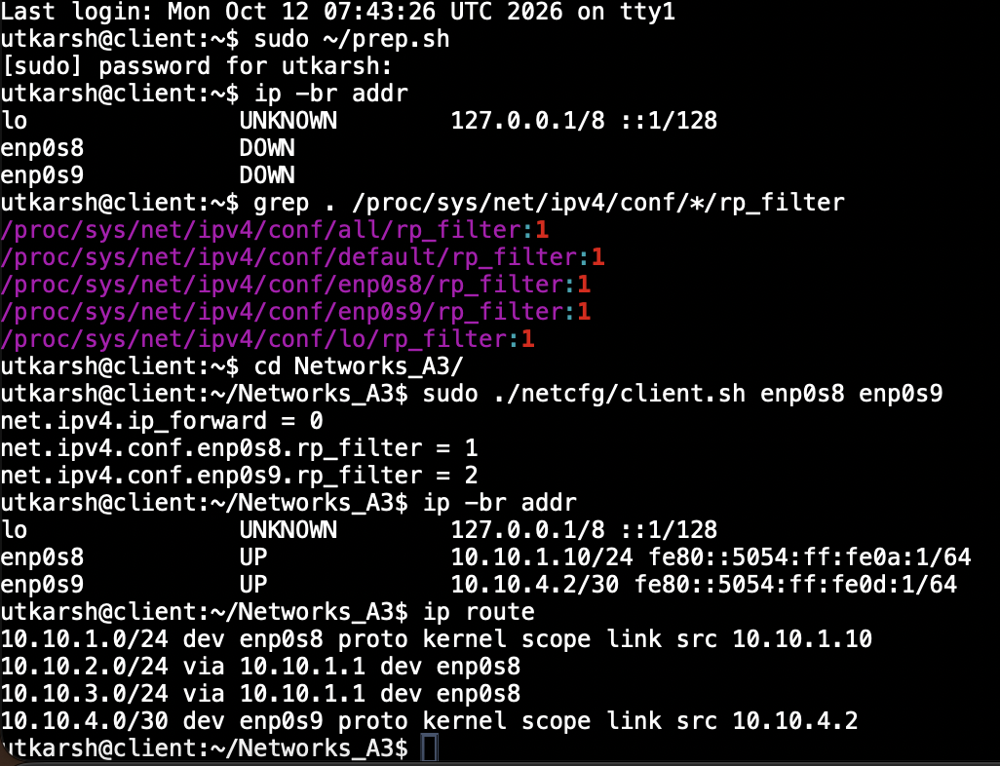
What it shows: the client gets 10.10.1.10/24 and 10.10.4.2/30. LAN B and LAN C are reached through r1 (10.10.1.1). There is no default route.
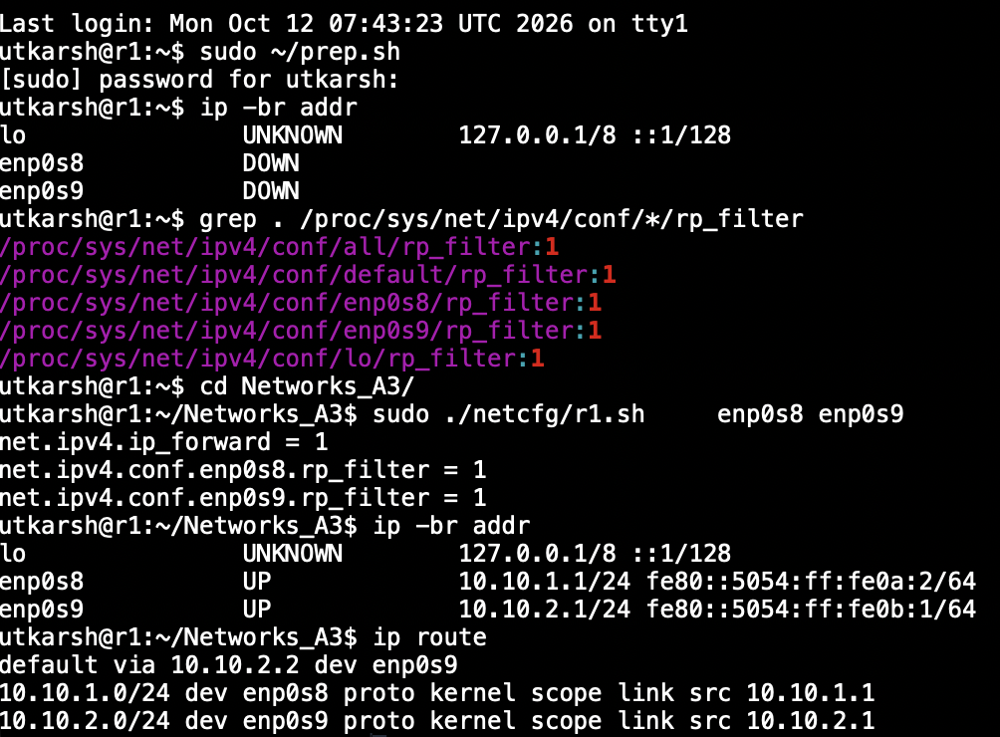
What it shows: r1 has its two addresses and one extra route only: default via 10.10.2.2 (A5). Forwarding is on.
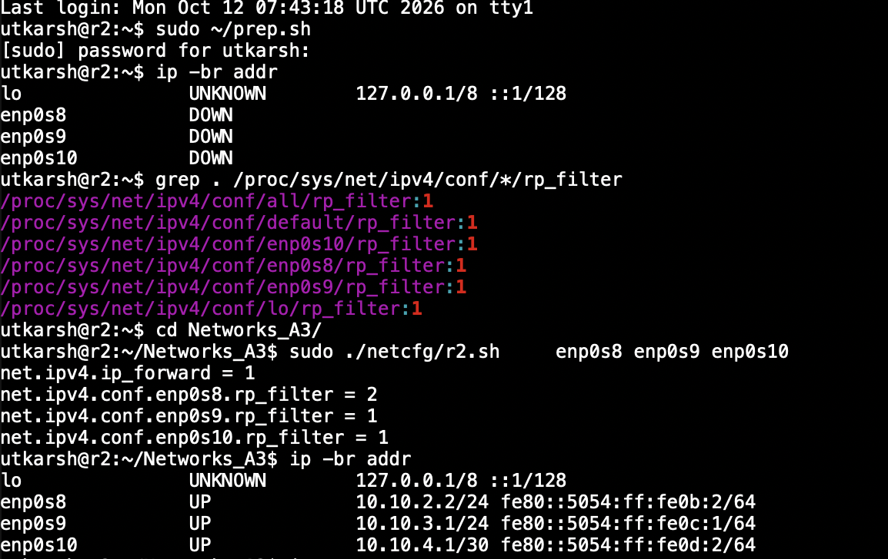
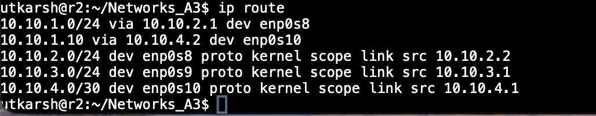
What it shows: r2 has its three addresses. It has the /24 route to LAN A through r1 and the /32 route to the client over Link D. There is no default route (A6).
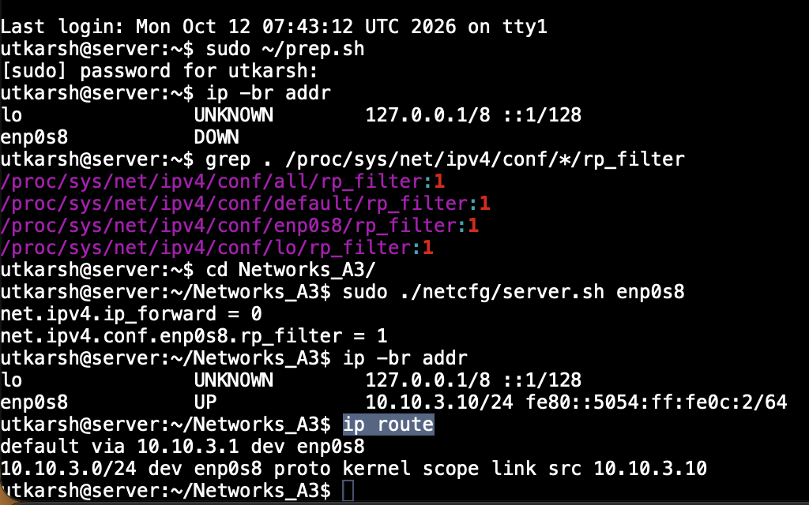
What it shows: the server gets 10.10.3.10/24 and one route, default via 10.10.3.1 (r2). Forwarding is off.
10.10.1.10: the /24 through r1 and the /32 over Link D./32 wins and the reply goes over Link D.10.10.1.1, still goes through r1.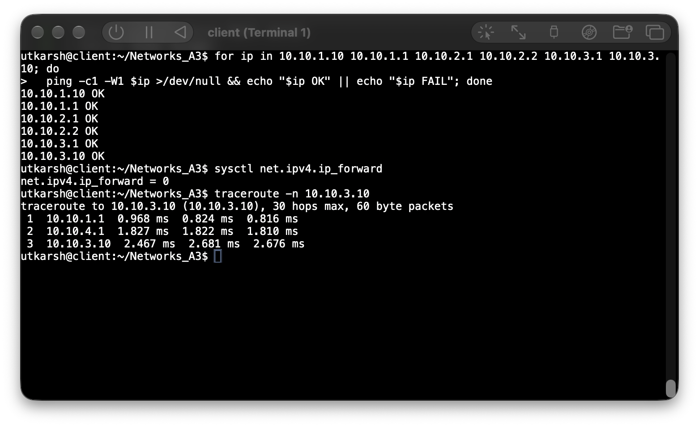
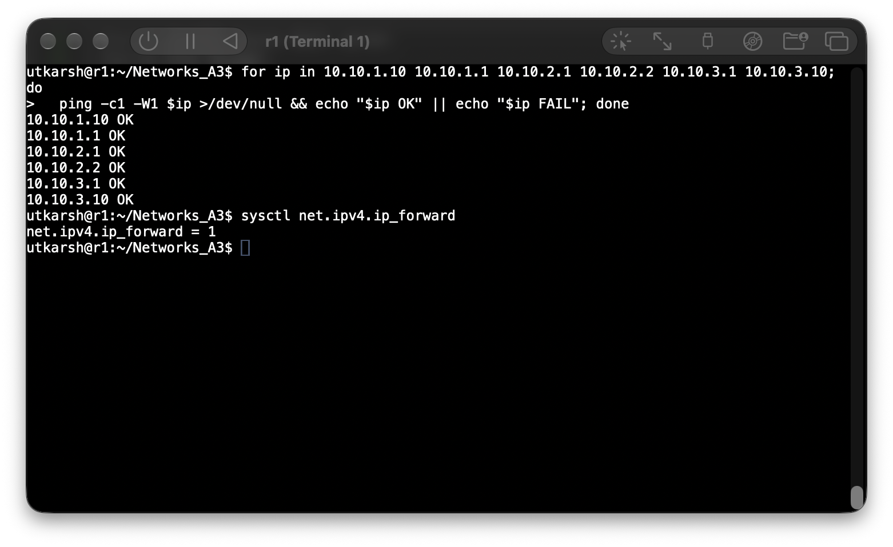
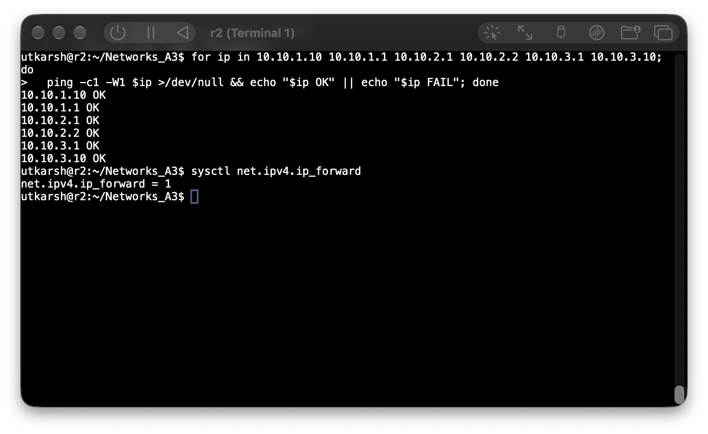
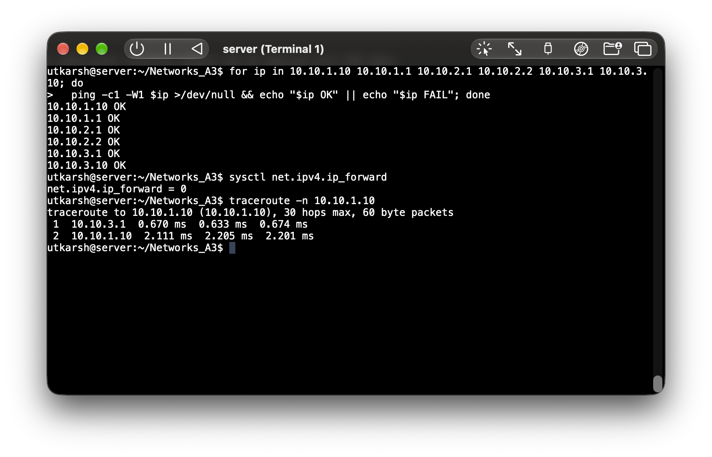
What it shows: every machine pings all six addresses on LANs A, B and C, and all of them answer (A1). ip_forward is 1 on r1 and r2 and 0 on the client and server (A4).
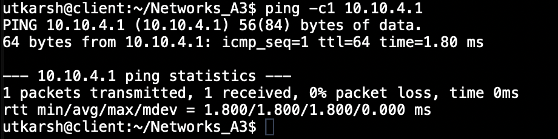
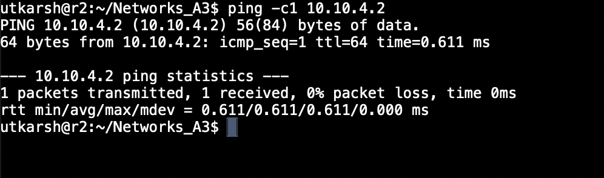
What it shows: the client and r2 can reach each other over Link D (10.10.4.1 and 10.10.4.2). TTL 64 means no router in between.
The two traceroutes are at the bottom of the client and server screenshots above.
| Direction | Hops |
|---|---|
client to server (traceroute -n 10.10.3.10) |
1: 10.10.1.1 (r1), 2: 10.10.4.1 (r2), 3: 10.10.3.10 (server) |
server to client (traceroute -n 10.10.1.10) |
1: 10.10.3.1 (r2), 2: 10.10.1.10 (client) |
/32 route sends it straight to the client over Link D, so r1 never appears.10.10.4.1 and not 10.10.2.2: when r2 says "time exceeded" to the client, it sends that ICMP reply from the address of the interface the reply leaves through. A reply to the client leaves over Link D, so its source is 10.10.4.1.net.ipv4.ip_forward is 1 on r1 and r2 and 0 on the client and server, so only the routers pass packets on.| Machine | Interface | Setting | Why |
|---|---|---|---|
| client | Link D (enp0s9) | loose (2) | Replies from the server arrive over Link D, but the client's route to the server is through r1 |
| r2 | LAN B (enp0s8) | loose (2) | Client packets arrive from r1, but r2's route back to the client is over Link D |
| client, r2 | all other interfaces | strict (1) | Their paths are symmetric, so strict is safe |
| r1, server | all interfaces | strict (1) | Required by the assignment (A7); their paths are symmetric |
The kernel uses the higher of the all and per-interface values, so setting 2 on one interface works while all stays 1.
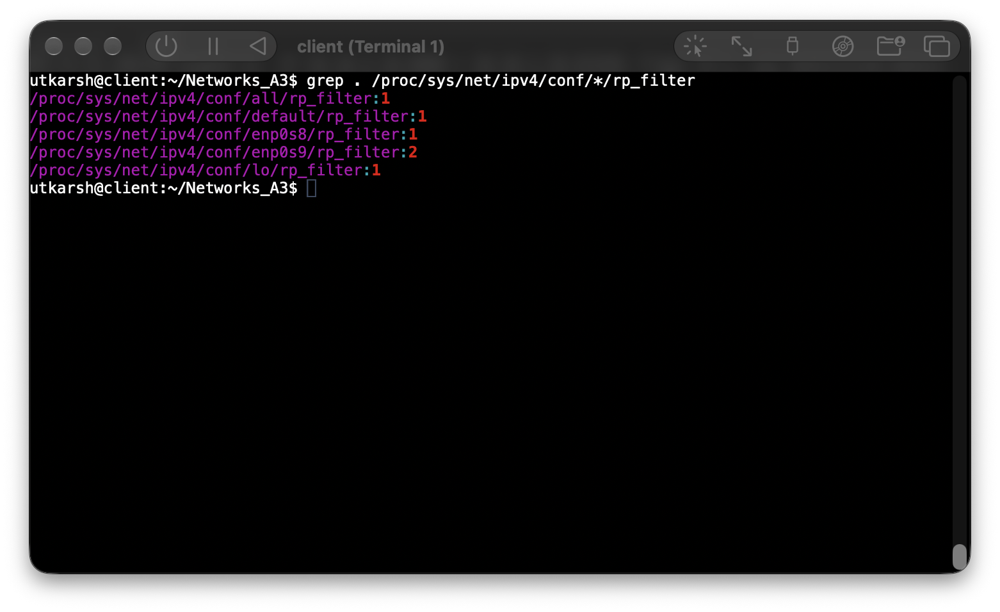
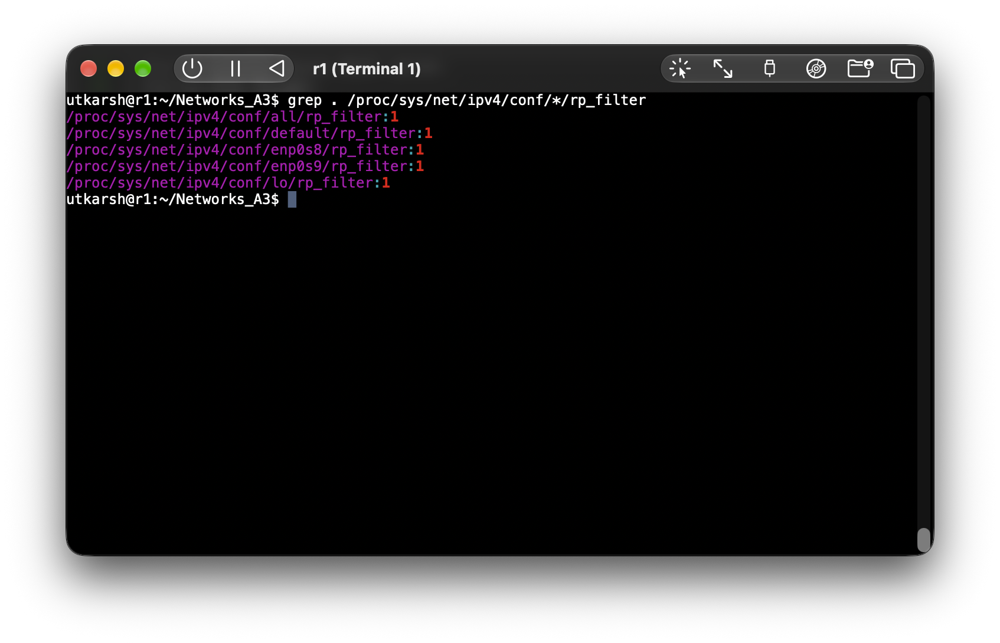
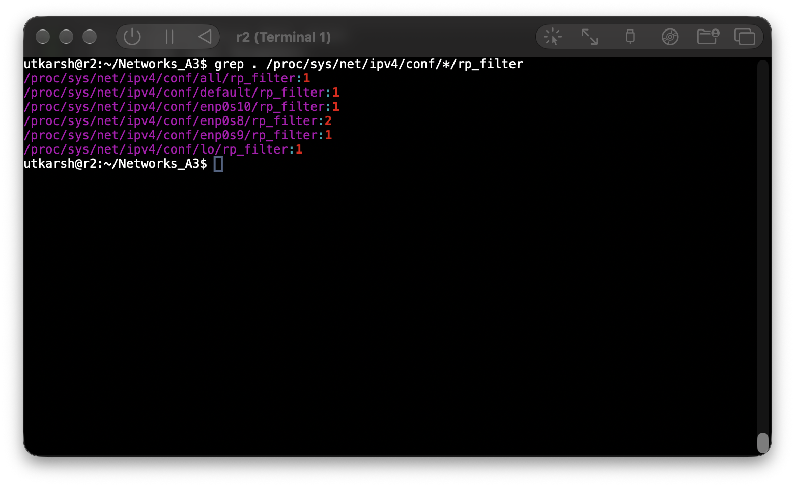
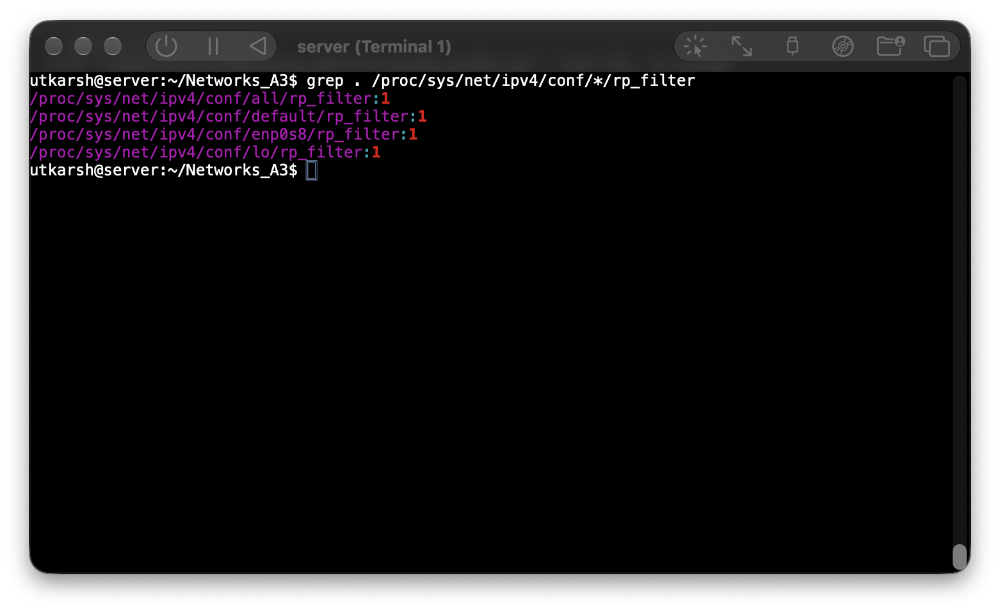
What it shows: the final values. Only client enp0s9 (Link D) and r2 enp0s8 (LAN B) are 2. Everything else, including all of r1 and the server, is 1.
Proof that loose mode is needed:
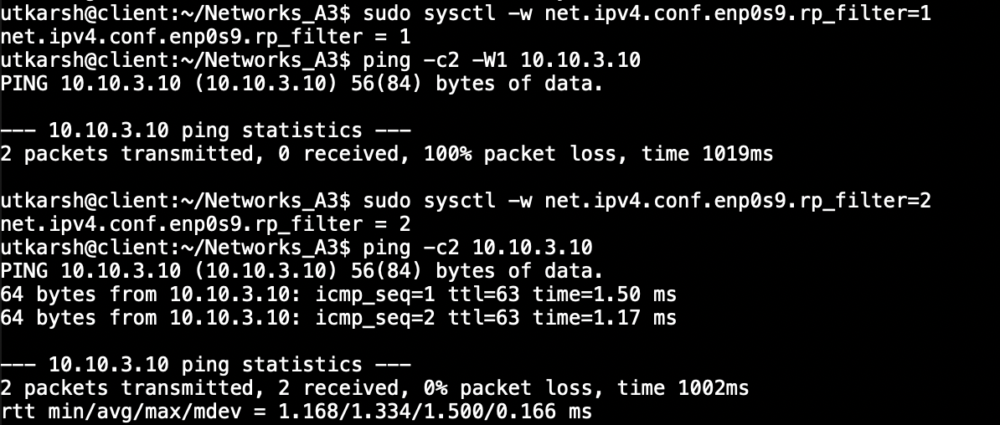
What it shows: we set client Link D back to strict (1). The ping to the server fails (100% loss), because the reply comes in on Link D. With 2, the ping works again.
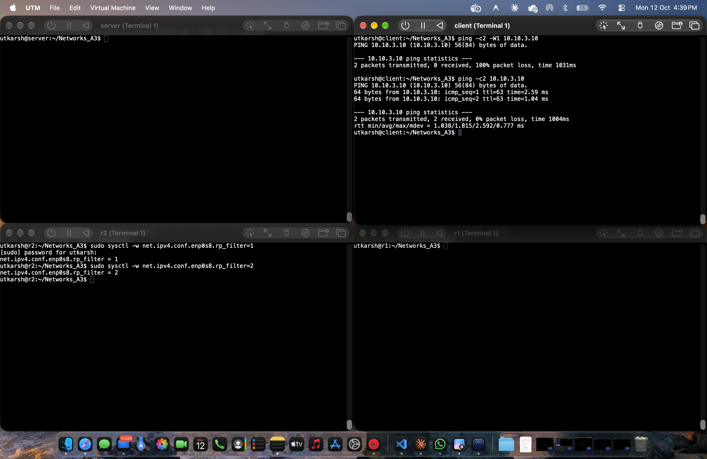
What it shows: we set r2 LAN B to strict (1). The client's ping to the server fails, because r2 drops the request coming from r1. With 2, the ping works again.
We build every IPv4 and TCP header ourselves and keep all connection logic in one class.
| File | What it holds | What it does not know |
|---|---|---|
ip_header.py |
Internet checksum; builds and checks IPv4 headers (DF flag, ID from 1 to 65535, TTL 64; rejects bad version, lengths, checksum and fragments) | Anything about TCP or connections |
tcp.py |
Flag constants; builds and checks TCP headers (checksum with pseudo-header; only the MSS option is sent or read) | Anything about connections |
custom_socket.py |
CustomTCPSocket: handshake, send, receive, teardown, timers, congestion control, packet log |
Header layout: it works with already parsed fields |
A sequence number counts bytes, so these variables mark positions in the byte stream.
| Variable | Meaning |
|---|---|
snd_una |
Oldest byte sent but not yet acknowledged |
snd_nxt |
Next byte to send |
snd_max |
Highest byte ever sent (stays ahead of snd_nxt after a resend) |
rcv_nxt |
Next byte we expect from the peer, and the ACK number we send |
cwnd, ssthresh |
Congestion window and slow-start threshold, in bytes |
rto, srtt, rttvar |
Retransmission timeout and the round-trip estimates behind it |
out_of_order |
Segments that arrived early, stored by sequence number |
Sequence numbers are 32-bit and wrap around, so every comparison uses the helpers seq_add, seq_diff, seq_lt and seq_le.
connect): pick a random source port (61000 to 65535) and find the local address with a UDP socket that sends nothing. Send a SYN with a random initial sequence number and MSS 1460.accept): wait for a SYN to the listening port on any address, remember who sent it, and reply from the address the SYN was sent to with a SYN-ACK (MSS 1460). The SYN-ACK is resent every 1 second, and at once if the client's SYN repeats.mss to the smaller of 1460 and the peer's MSS (536 if the peer sent none) and start with cwnd at 10 segments.send stores the data and loops until everything is acknowledged, so it returns only when snd_una reaches the end._send_new_data sends segments of up to one MSS while the data in flight stays below the smaller of cwnd and the peer's window. The last segment carries the PSH flag.send raises a timeout._handle_segment: a RST aborts, an ACK goes to _handle_ack, and data or a FIN goes to _handle_data.rcv_nxt is in order: any part we already have is skipped and the rest is added to the receive buffer.rcv_nxt but inside the 65535 window is stored in out_of_order. When a gap fills, _deliver_out_of_order moves the stored segments into the buffer in order.rcv_nxt, including duplicates and early ones. recv hands the buffered bytes to HTTP, or empty bytes after the peer's FIN.This is Reno with NewReno partial ACKs. Data in flight never exceeds the smaller of the congestion window (cwnd) and the peer's window. The table shows what each event does.
| Event | What happens |
|---|---|
| Connection starts | cwnd is 10 segments (10 x MSS) |
| ACK while cwnd is below ssthresh (slow start) | cwnd grows by up to one MSS per ACK |
| ACK at or above ssthresh | cwnd grows by MSS x MSS / cwnd, about one MSS per round trip |
| 3 duplicate ACKs | ssthresh becomes half the data in flight (at least 2 MSS), the lost segment is resent, cwnd becomes ssthresh plus 3 MSS |
| Partial ACK during recovery | The next missing segment is resent at once |
| ACK covering everything sent before the loss | cwnd becomes ssthresh and recovery ends |
| Timeout | ssthresh becomes half the data in flight, cwnd becomes 1 MSS, the oldest segment is resent |
close sends a FIN and resends it every timeout until it is acknowledged, while still acknowledging the peer's data and FIN._send_segment builds the TCP header, then the IP header with the next identification number (1 to 65535, never 0), and sends the packet with sendto on a raw socket opened with IP_HDRINCL. A failed send is treated like a lost packet._receive_packet reads a raw packet, checks the IP header and then the TCP header (both checksums), and drops bad ones silently. _next_segment keeps only packets with our connection's addresses and ports. A 4 MB receive buffer avoids drops during bursts._log writes one line per segment sent or accepted, in the assignment's format, and flushes after every line. Sockets that use the same log path share one open file, which is how the server logs many connections into one file.iptables rule that drops outgoing RSTs (only once, -C checks first). Running other programs is allowed in the launchers. The DROP tcp ... flags:0x04/0x04 line seen in later screenshots is this rule being printed.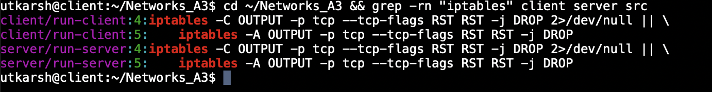
What it shows: the only place iptables is used is lines 4 and 5 of run-client and run-server. Our Python code never runs other programs.
Our client downloads small.bin from our server on port 8080 while tcpdump records it on the client.
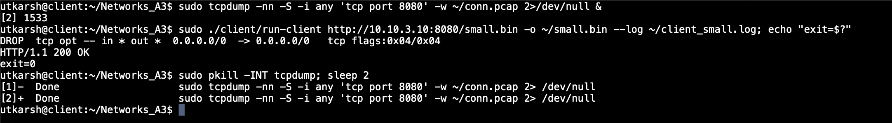
What it shows: tcpdump starts, our client downloads small.bin with --log, gets 200 OK and exit code 0, then tcpdump stops.
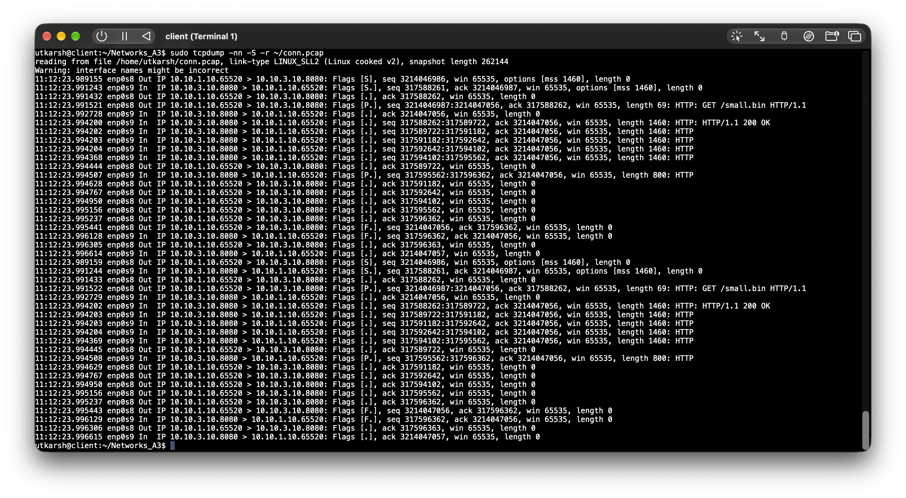
What it shows: tcpdump -nn -S -r ~/conn.pcap. The first 21 lines are one complete connection (the same 21 lines then repeat, because two old tcpdump jobs were writing to the same file; this is a capture mistake, not extra packets):
[S] with mss 1460 from random port 65520, [S.] with mss 1460 back, then [.]. Both sides advertise window 65535 and send only the MSS option.[P.] segment of 69 bytes with GET /small.bin HTTP/1.1.HTTP/1.1 200 OK. The client sends a cumulative ACK for every one.[F.], the server answers with its own [F.], and each side ACKs the other's FIN.enp0s8 (LAN A, through r1). Packets it receives come in on enp0s9 (Link D). This is the asymmetric routing from Part A.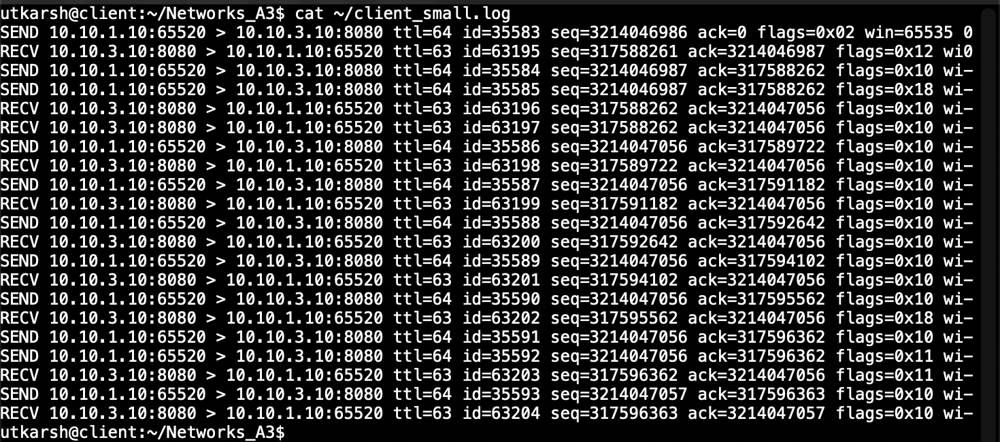
What it shows: cat ~/client_small.log, our own log of the same connection (same port 65520 and the same sequence numbers as the capture). Each line has the assignment's format.
0x02, SYN-ACK 0x12, ACK 0x10, request and last data segment 0x18 (PSH+ACK), FIN 0x11.The right end of each line (win, len, mss) is cut off by the window width.
We made r2 drop 5% of the packets it sends to the client over Link D, then downloaded big.bin from our server.
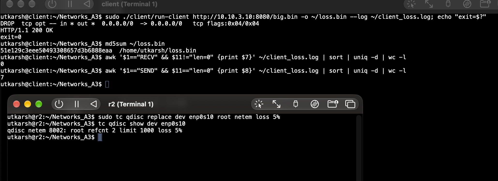
What it shows: with netem loss 5% on r2, the download still ends with 200 OK, exit code 0, and the same md5sum as the original (51e129c3...). Our log shows the client sent the same ACK number more than once 7 times. These are the duplicate ACKs that tell the server a segment was lost, so it resends it.
We made r2 delay packets by 10 ms and send 25% of them early (out of order), then downloaded big.bin again.
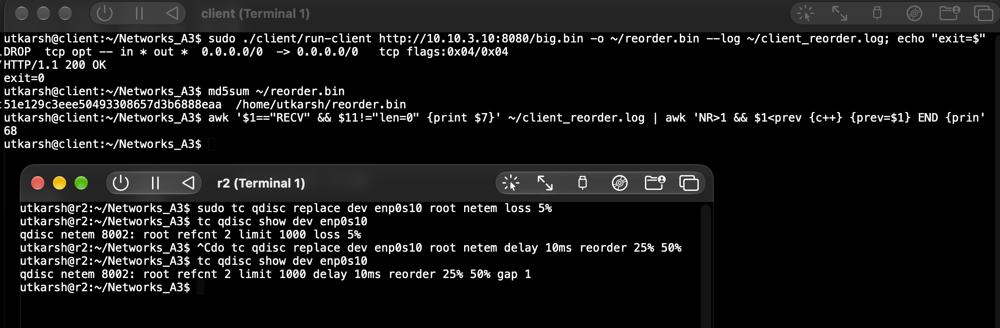
What it shows: with netem delay 10ms reorder 25% 50%, 68 data segments arrived with a lower sequence number than the one before them, so they were out of order. The file still has the correct md5sum and exit code 0, so early segments were kept and put back in order.
We made a 50 MB file huge.bin on the server and served it twice: from our server (port 8080) and from python3 -m http.server (port 8000). On r2, we limited Link D to 10 Mbit/s. All data to the client goes over Link D, so this is the shared bottleneck.
What it shows: on the server VM, we make the 50 MB test file from random bytes.
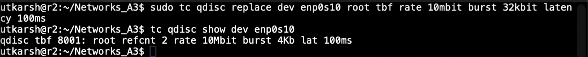
What it shows: r2's Link D (enp0s10) is limited to 10 Mbit/s with a token bucket filter (tbf).
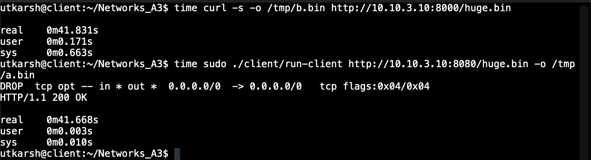
What it shows: first, each download runs alone. curl takes 41.8 s and our client takes 41.7 s. Both reach about 9.6 Mbit/s (50 MB in about 42 s), so each one alone fills the link.
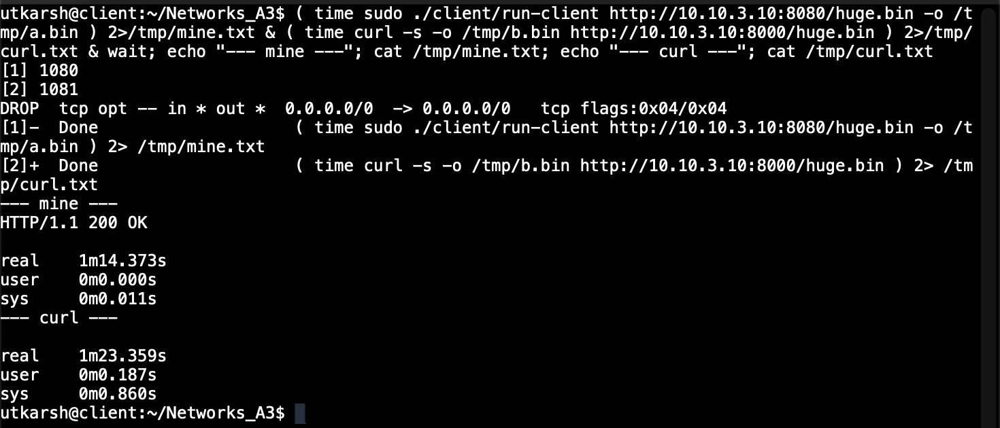
What it shows: then both downloads start at the same moment. Our client finishes in 74.4 s and curl in 83.4 s. Both get 200 OK.
| Run | Our client | curl |
|---|---|---|
| Alone | 41.7 s | 41.8 s |
| Together | 74.4 s | 83.4 s |
What this means:
Notes on this test:
pgrep lists our server twice. An older copy from the silent-client test was still running. Both downloads still completed with 200 OK.sudo tc qdisc del dev enp0s10 root).Each file belongs to one part; the HTTP files (Parts C and D) sit on the TCP and IP files (Part B).
| File | Part | What it does |
|---|---|---|
netcfg/*.sh |
A | One script per VM: brings up interfaces, sets addresses, routes, forwarding and rp_filter |
ip_header.py |
B | Builds and checks IPv4 headers and checksums |
tcp.py |
B | Builds and checks TCP headers and checksums |
custom_socket.py |
B | Our TCP: handshake, reliable send, receive, teardown, packet log |
custom_http.py |
C and D | URL parsing, request and response building, response reading, and the server's accept loop |
client.py |
C | Reads the command line, builds the request, calls the connection, writes the body, sets the exit code |
server.py |
D | Reads the command line, picks the file to send, chooses the status code and Content-Type |
client/run-client, server/run-server |
C, D | Add the RST-drop rule, then exec the Python program with all arguments |
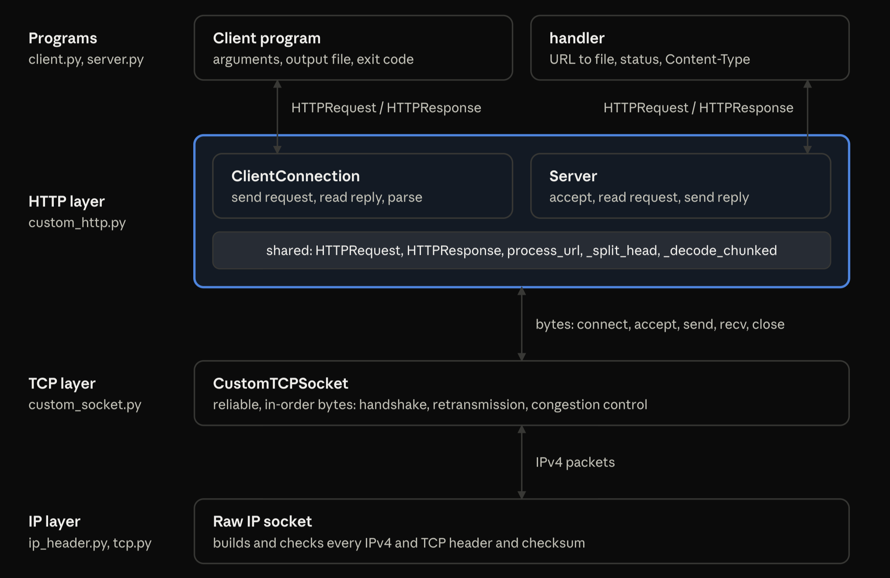
Programs pass request and reply objects to the HTTP layer, the HTTP layer passes plain bytes to our TCP socket, and the socket passes IPv4 packets to the network. Nothing skips a layer, so each one can be explained without the others.
Each class has one job and is kept unaware of the layers around it. The rows go from the top layer down to the bottom.
| Class or piece | File | Its one job | What it deliberately does not know |
|---|---|---|---|
client.py (a script, no class) |
client.py |
Reads the command line, builds the request, calls the connection, writes the body, sets the exit code | How bytes are sent or parsed, anything about TCP |
handler |
server.py |
The website logic: turns a request into a file and a status (200, 403, 404, 501) with the right Content-Type |
Sockets, bytes on the wire, or how the request was read |
HTTPRequest (data class) |
custom_http.py |
Holds one request: method, url, headers, body | How it is turned into bytes |
HTTPResponse (data class) |
custom_http.py |
Holds one reply: status code, headers, body, reason | How it is turned into bytes |
CustomHTTP.ClientConnection |
custom_http.py |
Runs one client exchange: connect, send the request, read until the reply is whole, parse it, close | Files, command-line options, exit codes, TCP details like ACKs |
CustomHTTP.Server |
custom_http.py |
The accept loop: one fresh socket per connection, read the request head, parse it, pass it to the handler, send the reply | Which files exist or why a status was chosen; it only calls handler.execute_get |
CustomHTTP |
custom_http.py |
An empty outer class, used only as a name that groups the client and server classes | Nothing: it has no state |
process_url, _split_head, _decode_chunked |
custom_http.py |
Plain functions shared by both sides: split a URL, split a head, decode chunks | Nothing: they keep no state between calls |
CustomTCPSocket |
custom_socket.py |
A reliable byte stream with connect, accept, send, recv, close |
HTTP: it never looks at what the bytes mean |
The split keeps every piece small enough to explain, test and change on its own.
HTTPRequest and HTTPResponse have no behaviour, and both sides use the same two types.Server only needs execute_get(request, time_budget), so file logic lives in server.py and can be tested with no network.parse_request answers malformed requests (400) itself; the handler only deals with files (501, 403, 404, 200).convert_request_to_bytes with parse_response, and parse_request with convert_response_to_bytes, sharing process_url and _split_head.connect, accept, send, recv, close. It has no retransmission or ordering code.client.py turns any of them into exit code 2; the server loop ignores them and keeps running.The client makes exactly one GET request per run, in these steps:
-o, -l) and split the URL with process_url. Only http:// URLs are accepted.Host (as written in the URL) and Connection: close, nothing else.send_request finds the IP, opens our TCP connection (port 80 by default) and sends the request._complete says it is whole (by Content-Length, by chunks, or when the server closes). Each read waits at most 10 seconds.parse_response reads the status line and headers, then takes the body by chunks, by length, or until close.finally block. The body goes to the file or stdout, and the status line goes to stderr.Exit codes: 0 for a 2xx reply; 1 for any other complete reply (body still saved, redirects not followed); 2 for anything else (bad URL, DNS failure, refused, timeout, reset, incomplete body).
The server runs forever and serves one connection at a time, in these steps:
-p (default 8080), -d (default ./www) and the log option. Exit with code 1 if DOCROOT is not a folder.accept waits for a SYN on any address and replies from the address the SYN was sent to.parse_request answers a bad request line, or a target that does not start with /, with 400 straight away.execute_get picks the status, file and headers (table below).convert_response_to_bytes builds the reply, our TCP sends it and closes. Any error on one client is ignored, so the server never exits because of a bad client.The server checks these conditions in order and stops at the first one that matches.
| Order | Condition | Status | Where in the code |
|---|---|---|---|
| 1 | Request line is not METHOD SP TARGET SP HTTP/x.y, or target does not start with / |
400 Bad Request | parse_request in custom_http.py |
| 2 | Method is not GET or HEAD | 501 Not Implemented | execute_get in server.py |
| 3 | A path segment is .. |
403 Forbidden | execute_get: ".." in path.split("/") |
| 4 | The file does not exist | 404 Not Found | execute_get: os.path.isfile |
| 5 | Otherwise | 200 OK | execute_get: file is read and sent |
/ (or naming a folder) maps to index.html there. No percent-decoding is done.HTTP/1.1 with Content-Type (from the file extension, application/octet-stream if unknown), Content-Length and Connection: close. A HEAD reply has the same headers and no body.All commands run on the client VM (10.10.1.10) against the server VM (10.10.3.10).
On the server VM, python3 -m http.server 8000 serves ~/www, which holds index.html and a binary file big.bin.
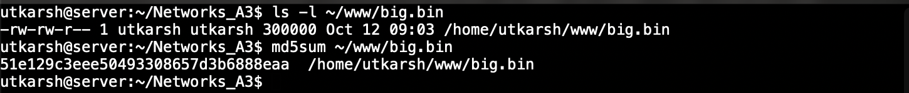
What it shows: on the server VM, big.bin is 300,000 bytes (more than 100 KB). Its original md5sum is 51e129c3eee50493308657d3b6888eaa.
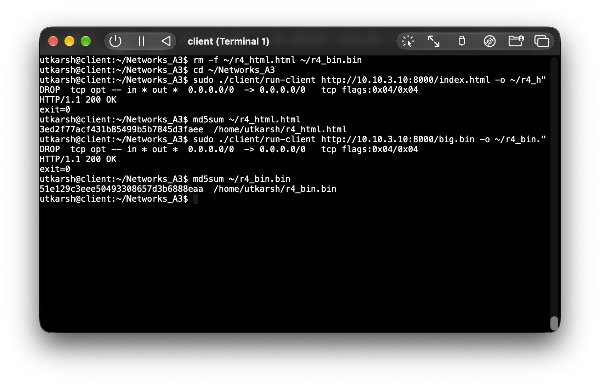
What it shows: our client downloads index.html and big.bin. Both print HTTP/1.1 200 OK and exit with code 0. Their md5sums are 3ed2f77a... (HTML) and 51e129c3... (binary).
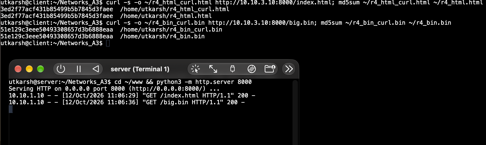
What it shows: curl downloads the same two URLs. Each curl md5sum is printed next to ours and they are equal. The server window shows the GET requests coming from 10.10.1.10 with status 200.
| Test | Result |
|---|---|
| HTML page matches curl | 200 OK, exit 0, md5 3ed2f77acf431b85499b5b7845d3faee for both |
| Binary file matches curl | 200 OK, exit 0, md5 51e129c3eee50493308657d3b6888eaa for both |
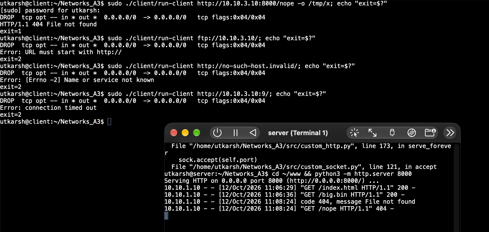
What it shows: four error cases and their exit codes.
| Test | Command | Result |
|---|---|---|
| Missing file | run-client http://10.10.3.10:8000/nope -o /tmp/x |
HTTP/1.1 404 File not found, exit 1 (body still saved) |
| Not an http URL | run-client ftp://10.10.3.10/ |
Error: URL must start with http://, exit 2 |
| Unknown host | run-client http://no-such-host.invalid/ |
Error: Name or service not known, exit 2 |
| Port with no server | run-client http://10.10.3.10:9/ |
Error: connection timed out, exit 2 |
For the last test we expected "connection refused". It times out instead because the server VM still had the RST-drop rule from an earlier run of run-server, so the server's kernel could not send its RST. The exit code is still 2, as the assignment asks.
On the server VM, sudo ./server/run-server -p 8080 -d ~/www serves the same index.html and big.bin.
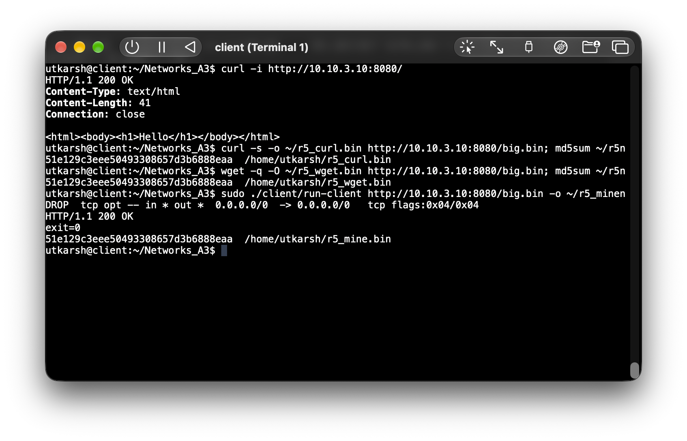
What it shows:
curl -i http://10.10.3.10:8080/ returns 200 OK with Content-Type: text/html, Content-Length: 41, Connection: close and the content of index.html. So a folder path maps to index.html.big.bin from our server, and all three md5sums are 51e129c3eee50493308657d3b6888eaa. This is the md5sum of the original file on the server (shown in R4), so all three match the original.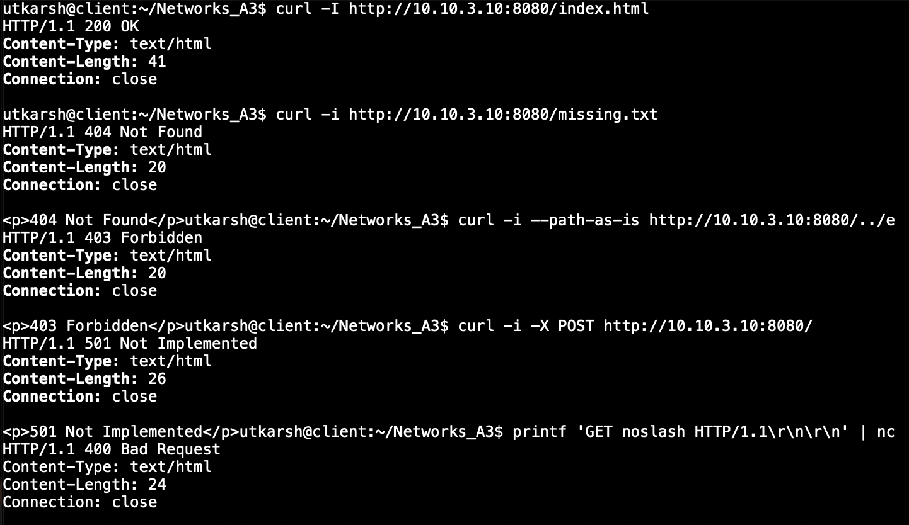
What it shows: the response rules, one per command.
| Request | Result |
|---|---|
curl -I /index.html (HEAD) |
200 OK, same headers as GET (Content-Length: 41), no body |
curl -i /missing.txt |
404 Not Found with a small HTML body |
curl -i --path-as-is /../e... |
403 Forbidden (a path segment is ..) |
curl -i -X POST / |
501 Not Implemented |
printf 'GET noslash HTTP/1.1\r\n\r\n' \| nc ... |
400 Bad Request (target does not start with /) |
Every error reply is HTTP/1.1 and has Content-Type, Content-Length and Connection: close.
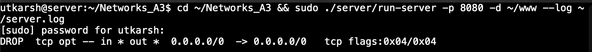
What it shows: on the server VM, our server is running on port 8080 with ~/www as DOCROOT.
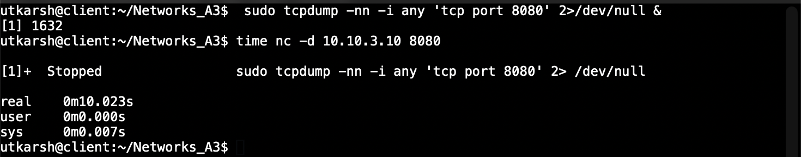
What it shows: on the client VM, nc -d connects and sends nothing (-d stops nc from reading the keyboard, so it exits as soon as the server closes the connection). nc exits after 10.023 seconds. So the server waited 10 seconds for a request head, then closed the connection without sending a reply. Afterwards the server keeps running. (The Stopped line is the background tcpdump job being paused by the shell; it does not affect the test.)